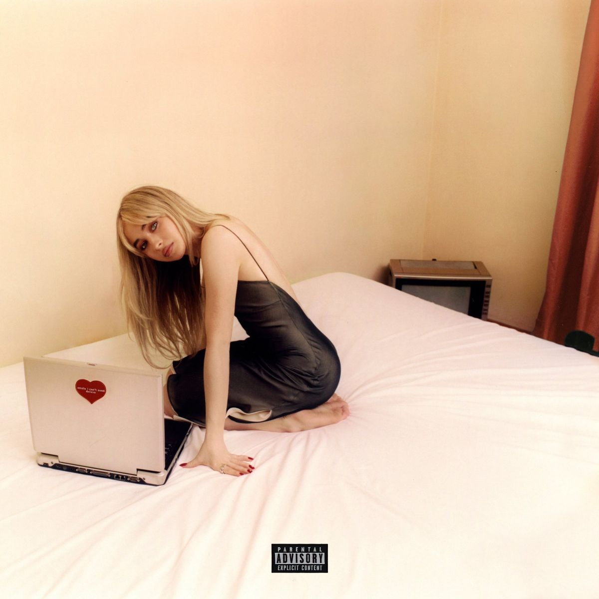
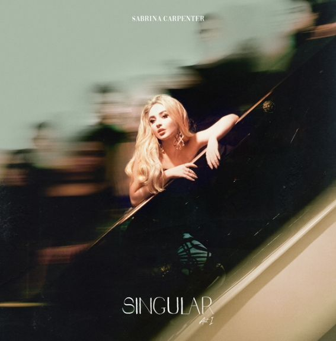
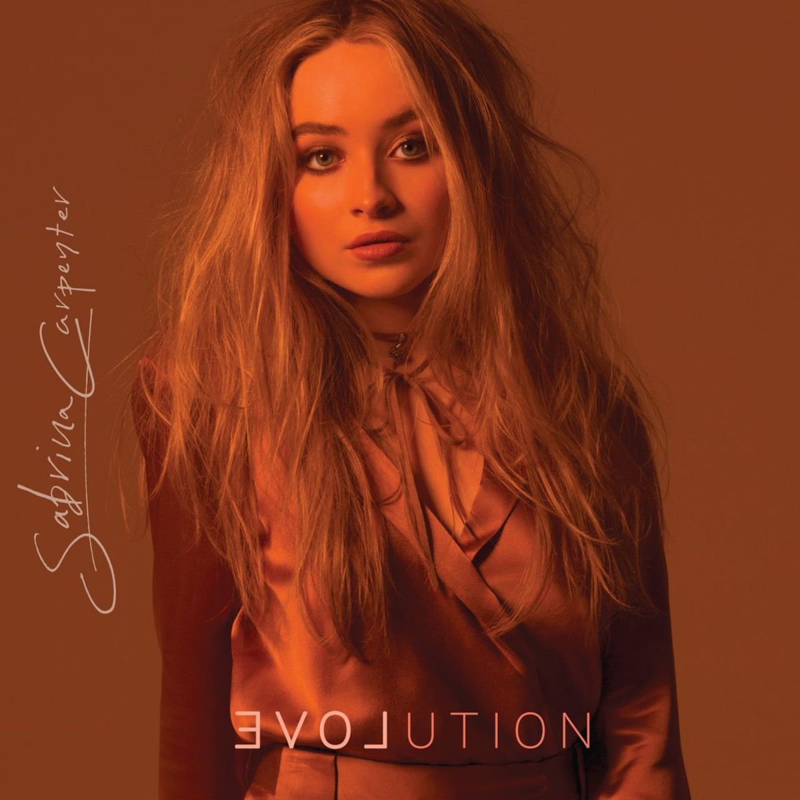

Quem é Sabrina Carpenter?
Sabrina Annlynn Carpenter nasceu em 11 de maio de 1999, em Quakertown, Pensilvânia (EUA). Ela é uma cantora, compositora e atriz que conquistou o mundo com seu talento único e carisma inconfundível.
Sabrina começou sua carreira ainda criança, participando de produções da Disney, como Girl Meets World (onde interpretou Maya Hart) e Adventures in Babysitting. Mas foi na música que ela realmente encontrou sua voz.
Com álbuns aclamados como Emails I Can't Send (2022), Short n' Sweet (2024) e hits como Espresso, Nonsense e Please Please Please, Sabrina se consolidou como uma das artistas pop mais importantes da sua geração. Seu estilo mistura humor, vulnerabilidade e uma estética retrô-divertida que encanta fãs de todas as idades.
Além da música, Sabrina também é conhecida por seu carisma nos palcos, sua moda icônica e por ser uma excelente compositora — ela co-escreve quase todas as suas músicas.
📸 Galeria de Fotos
💿 Discografia em Destaque

Emails I Can't Send
2022
Álbum que marcou a transição de Sabrina para uma maturidade artística, com hits como "Nonsense" e "Because I Liked a Boy".

Short n' Sweet
2024
O álbum que a levou ao topo das paradas mundiais com "Espresso", "Please Please Please" e "Taste".

Singular: Act I
2018
Um marco em sua carreira pop, com faixas como "Sue Me" e "Almost Love".

Evolution
2016
Seu segundo álbum de estúdio, com uma sonoridade mais madura e faixas como "On Purpose".